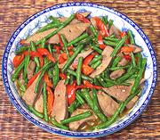

|
Pork Liver with Long BeansThailand | ||||
| Serves: Effort: Sched: DoAhead: |
2 main ** 30 min Prep |
A favorite - quick and easy with complimentary textures and flavors - and no onions. Heresy! Very short cooking times make for crisp-tender beans and liver that's just firm, so don't exceed them. | |||
|
10 10 5 4 ----- 1/4 1/2 3 2 1 2 ----- 2 |
oz oz cl --- t t T T T T --- T |
Pork Liver (1) Long Beans (2) Chili, Red (3) Garlic -- Sauce Pepper black Salt Oyster Sauce (4) Soy Sauce Fish Sauce (5) Stock ---------- Oil |
Prep (23 min)
|